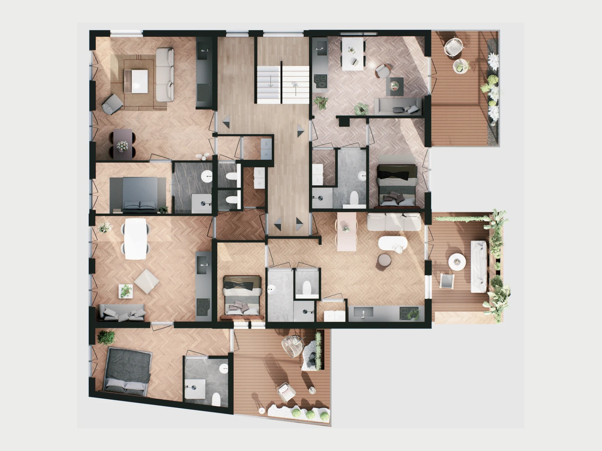
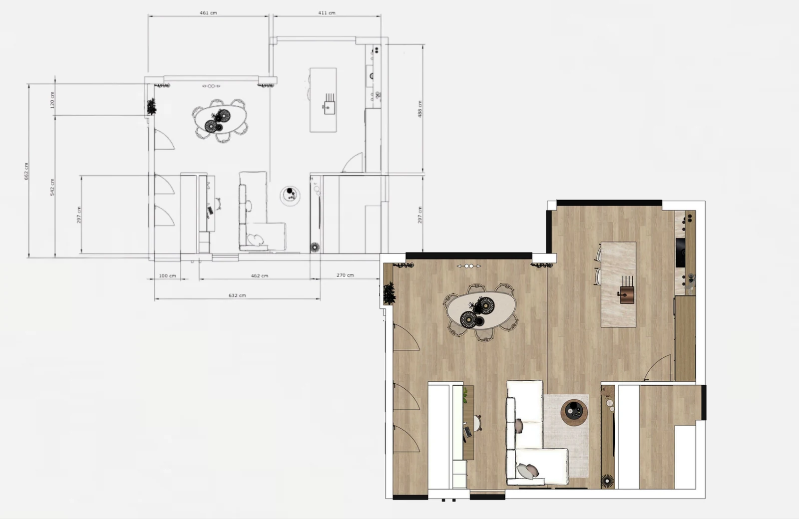
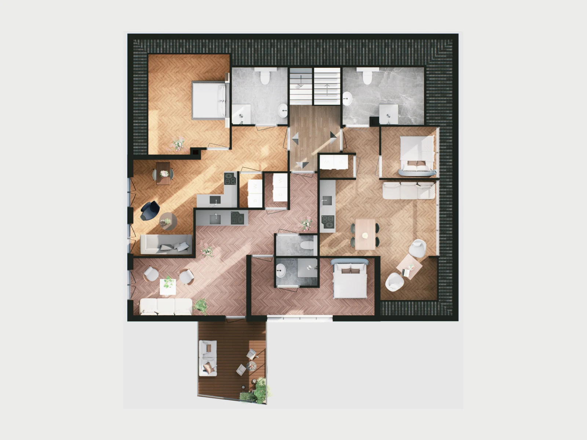
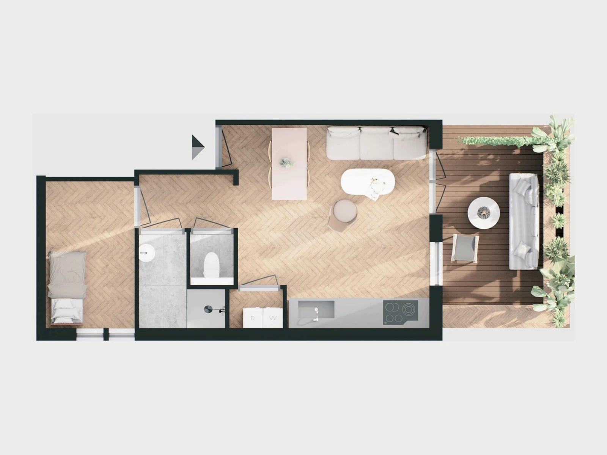

Tekeningen of maten
Beschikbare plattegronden, gevels, schetsen of betrouwbare hoofdmaatvoering van de bestaande en nieuwe situatie.
3D-visualisaties en vloerplannen
Bekijk vóór de uitvoering hoe uw verbouwing eruit kan zien en hoe de beschikbare ruimte wordt gebruikt. Kies een realistische 3D-visualisatie, een ingericht 3D-vloerplan of combineer beide.


3D-visualisatie
Een 3D-visualisatie vertaalt het bouwplan naar een herkenbaar beeld. Daardoor kunt u bijvoorbeeld verschillende gevelmaterialen, kleuren, raamverdelingen of ontwerpvarianten gerichter beoordelen.
3D-vloerplan
Een ingericht vloerplan toont een verdieping van bovenaf, inclusief wanden, deuren en het afgesproken niveau van inrichting. De ruimtelijke opbouw baseren we op uw bestaande tekening, schets of gecontroleerde maatvoering. Zo worden looproutes en ruimteverhoudingen begrijpelijk zonder een indeling te verzinnen.

Controleerbare basis
De technische of handmatig ingemeten plattegrond bepaalt de vaste indeling. Daarna voegen we materialen, meubels en gebruikszones toe om het plan begrijpelijk te presenteren.
Ontbreekt essentiële maatvoering of is een aansluiting niet duidelijk, dan vragen we die informatie eerst op. Presentatie-elementen worden altijd los gezien van de technische bron.

Benodigde input
Goede broninformatie maakt het resultaat betrouwbaarder en voorkomt onnodige correcties. We controleren uw bestanden voordat de uitwerking begint.
Beschikbare plattegronden, gevels, schetsen of betrouwbare hoofdmaatvoering van de bestaande en nieuwe situatie.
Duidelijke foto’s van woning, ruimte en relevante aansluitingen helpen bij een passende visuele uitwerking.
Voorkeuren voor kleuren, gevelmaterialen, kozijnen, vloeren of sfeerbeelden die richting geven aan het ontwerp.
Vertel of u wilt vergelijken, presenteren of een indeling wilt beoordelen. Dat bepaalt standpunt en detailniveau.
Nog niet alles beschikbaar? Stuur wat u al heeft; we geven aan welke aanvullende informatie nodig is voordat we een definitieve scope afspreken.
Wat ontvangt u?
De prijs hangt af van omvang, detailniveau, beschikbare input en het aantal gewenste beelden of verdiepingen. Daarom leggen we eerst vast wat voor uw plan daadwerkelijk nodig is.
Aantal beelden of verdiepingen, camerastandpunten, detailniveau, bronbestanden, correctierondes, planning, bestandsformaat en de prijs inclusief én exclusief btw.
Vloerplanportfolio
Deze portfolio-voorbeelden zijn opgebouwd vanuit bestaande plattegronden of maatvoering. De inrichting maakt het gebruik zichtbaar; de bouwkundige basis komt uit de aangeleverde bron.



De juiste uitwerking
De drie uitwerkingen hebben ieder een ander doel. Voor een compleet traject kunnen ze naast elkaar worden gebruikt.
| Onderdeel | Technische bouwtekening | 3D-visualisatie | 3D-vloerplan |
|---|---|---|---|
| Hoofddoel | Technische en maatvaste vastlegging | Uitstraling, volume en materialen beoordelen | Indeling, verhoudingen en routing begrijpen |
| Perspectief | Plattegrond, gevel of doorsnede | Realistisch gekozen camerastandpunt | Ruimtelijk bovenaanzicht |
| Inrichting | Alleen indien technisch relevant | Volgens afgesproken beeld en detailniveau | Onderdeel van de ruimtelijke presentatie |
| Vervangt aanvraagstukken | Afhankelijk van afgesproken scope en vereisten | Nee | Nee |
Werkwijze
We bespreken wat u wilt beoordelen en controleren welke tekeningen, maten en referenties beschikbaar zijn.
U ontvangt afspraken over beelden, standpunten, detailniveau, correcties, planning en prijs.
De aangeleverde informatie wordt vertaald naar het afgesproken model en type presentatie.
Na de afgesproken correctie ontvangt u de definitieve bestanden in het overeengekomen formaat.
Veelgestelde vragen
Staat uw vraag er niet tussen? Stuur uw bestaande tekeningen of schetsen mee, dan kunnen we gerichter aangeven wat passend is.
Nee. Een visualisatie is bedoeld om het ontwerp begrijpelijk te presenteren. Een technische bouwtekening bevat maatvoering en bouwkundige informatie voor de afgesproken toepassing.
Ja, dat kan als losse visuele dienst. We beoordelen eerst of de beschikbare plattegrond en maatvoering voldoende basis bieden voor de gewenste uitwerking.
Dat is mogelijk wanneer de varianten vooraf in de scope zijn opgenomen. Het aantal varianten beïnvloedt de modelleer- en rendertijd en daarmee de offerte.
Het aantal correctierondes wordt vooraf in de offerte vermeld. Daardoor is duidelijk welke aanpassingen binnen de opdracht vallen en wanneer iets meerwerk is.
Resolutie en bestandsformaat worden afgestemd op het gebruik, bijvoorbeeld digitaal overleg of presentatie. De overeengekomen oplevering staat in de offerte.
Een 3D-beeld kan een plan verduidelijken, maar vervangt geen vereiste officiële aanvraagstukken. Welke documenten nodig zijn, hangt af van het plan en de toepasselijke regels.
Belangrijk onderscheid
Een 3D-visualisatie en een 3D-vloerplan ondersteunen ontwerpkeuzes en communicatie. Ze zijn geen constructieberekening, uitvoeringstekening of garantie op vergunningverlening. De benodigde technische en officiële stukken worden afzonderlijk bepaald.
Technisch Bouwadvies verzorgt de visuele uitwerking als losse dienst of als onderdeel van een breder bouwkundig traject. U houdt daarbij één aanspreekpunt voor de afgesproken werkzaamheden, planning en oplevering.
Uw plan in beeld
Stuur uw tekeningen, schetsen of foto’s mee. Daarna ontvangt u een voorstel dat past bij het gewenste beeld en detailniveau.